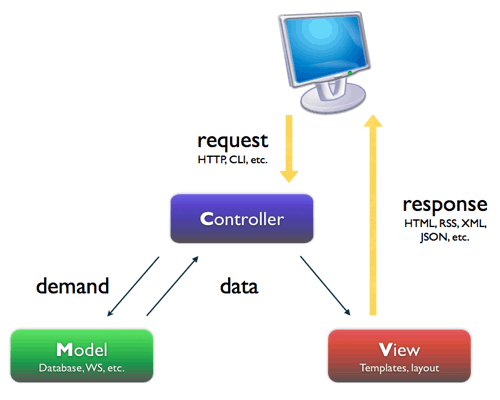
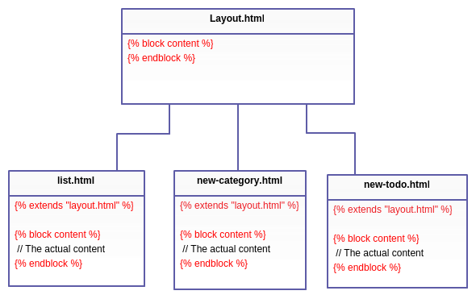

DAI, Plantillas
Desarrollo de Aplicaciones para Internet
Plantillas (Templates)

Modelo - Vista - Controlador
MVC.
Patrón de arquitectura de software que separa los datos y la lógica de negocio de una aplicación de la interfaz de usuario y el módulo encargado de gestionar los eventos y las comunicaciones.

Flask: Plantillas (templates)
Flask usa Jinja2 como motor de plantillas:
- HTML escaping
- Filtros
- Herencia de plantillas
- Compilado a python nativo eficiente
- Sintaxis configurable (para acomodarse mejor a otros formatos de salida como LaTeX o JavaScript)
"Hola Mundo" con Plantillas
holaMundo.py:
# -*- coding: utf-8 -*-
from flask import Flask
from flask import render_template
app = Flask(__name__)
@app.route('/')
def hello_world():
return render_template('hola.html')
if __name__ == '__main__':
app.run(host='0.0.0.0')
"Hola Mundo" con Plantillas
hola.html:
<html>
<head>
<title>¡Hola Mundo! con Plantilla</title>
</head>
<body>
<p>¡Hola Mundo! (con plantilla)</p>
</body>
</html>
Paso de parámetros
@app.route('/user/')
@app.route('/user/<user>')
def hello_world(user=None):
return render_template('hola.html', usuario=user)
{% if usuario %}
<h1>Bienvenido {{ usuario }}!</h1>
{% else %}
<h1>Bienvenido desconocido!</h1>
{% endif %}
Bucles
def hello_world():
tabla = ['primero', 'segundo', 'tercero']
return render_template('hola.html', rows=tabla)
<ul>
{% for row in rows %}
<li>{{ row }}</li>
{% endfor %}
</ul>
Sintaxis moustache
Por defecto:
- {% ... %} Sentencias.
- {{ ... }} Expresiones que serán impresas en la salida de la plantilla.
- {# ... #} Comentarios (no aparecerán en la salida).
- # ... ## Sentencias de una línea:
app.jinja_env.line_statement_prefix = '#'
"Escaping" automático
Por defecto Jinja2 "escapea" el html que le enviamos, se
puede desactivar:
- Usando la clase Markup en el código Python (recomendado).
- Usar el filtro "|safe" dentro de la plantilla:
{{ variable|safe }}.
- Desactivar el sistema de "escaping" temporalmente:
{% autoescape false %}
<p>autoescaping desactivado</p>
<p>{{ variable_no_escapeada }}</p>
{% endautoescape %}
Filtros
Efectuan modificaciones en el html
{{ 42.55|round }}
-> 43.0
{{ 42.55|round(1, 'floor') }}
-> 42.5
{{ 42.55|round|int }}
-> 43
Herencia de Plantillas
Permite crear una base, que luego será personalizada en otras plantillas

Herencia de Plantillas
base.html:
<!DOCTYPE html>
<html lang="en">
<head>
{% block head %}
<link rel="stylesheet" href="style.css" />
<title>{% block title %}{% endblock %} - My página</title>
{% endblock %}
</head>
<body>
<div id="content">{% block content %}{% endblock %}</div>
<div id="footer">
{% block footer %}
© Copyright 2008 by <a href="http://domain.invalid/">LALALA</a>.
{% endblock %}
</div>
</body>
</html>
Herencia de Plantillas
hijo.html:
{% extends "base.html" %}
{% block title %}Página principal{% endblock %}
{% block head %}
{{ super() }}
<style type="text/css">
.important { color: #336699; }
</style>
{% endblock %}
{% block content %}
<h1>Título de la página</h1>
<p class="important">
¡Bienvenido piltrafilla!
</p>
{% endblock %}